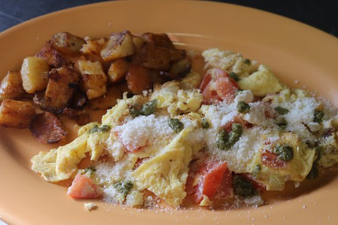
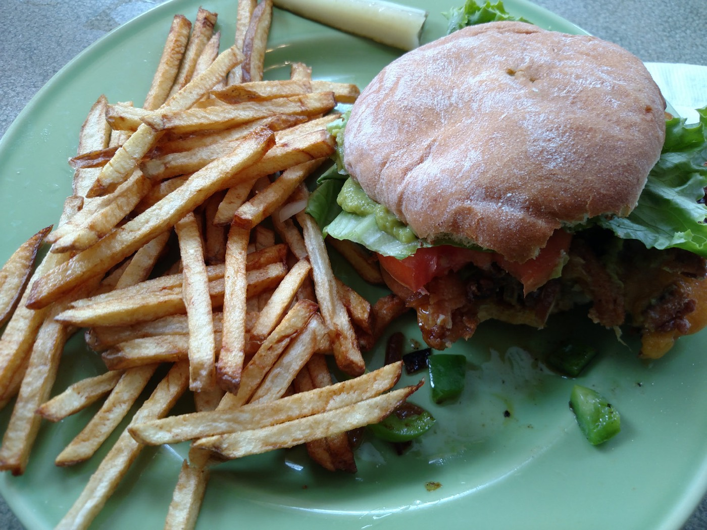
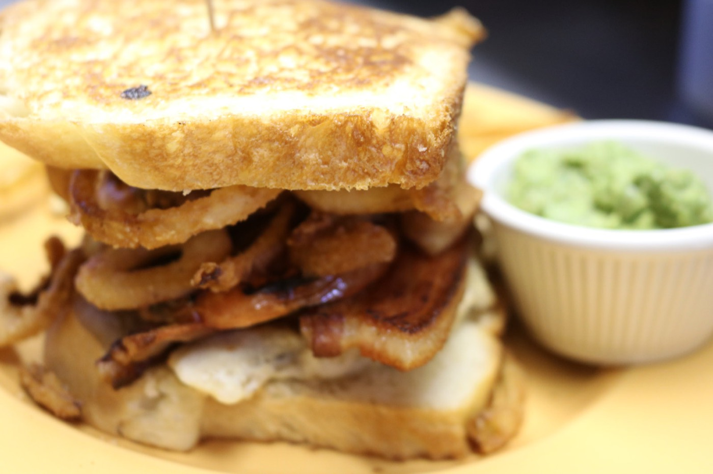

Ralph's Cafe & Bakery · Brooks, Maine
Breakfast from 8 to 11, lunch from 11 (Sunday brunch 11–2). Toast, buns and most sauces are made in our own kitchen.
Breakfast
Friday – Sunday, 8 to 11am.
Eggs and…Most plates come with homefries and homemade toast.
#1
2 eggs cooked any way with homefries and your choice of homemade toast and jam.
#2
2 eggs cooked any way with homefries and your choice of bacon, sausage links or ham. Served with homemade toast and jam.
#3
2 eggs any style over a bed of corned beef hash. Served with homefries and homemade toast and jam.
Lumber Jack
2 eggs any style, homefries, 2 pieces of bacon, 2 sausage links and your choice of 2 buttermilk pancakes or 2 slices of French toast.
Half Jack
One egg any style, homefries, one piece of bacon and one sausage link, with one buttermilk pancake or one slice of French toast.
Eggs Benedict House-made
Two poached eggs over a grilled English muffin and ham, topped with homemade hollandaise. Served with homefries.
Eggs Florentine House-made
Two poached eggs on a grilled English muffin with fresh baby spinach and tomato, topped with homemade hollandaise. Served with homefries.
Joe's Scramble
Two eggs scrambled with sautéed onion, spinach, potatoes and parmesan. With homemade toast and jam. Add bacon, ham or sausage.
Huevos Rancheros
Crisp flour tortilla strips topped with homefries, black beans, salsa and cheddar, then two eggs any style. With guacamole and sour cream.
Sausage Gravy House-made
Homemade biscuit topped with homemade sausage gravy, made with local sausage. Served with homefries. Add 2 eggs.
Sweet Potato Stack Veg
Roasted sweet potatoes topped with steamed kale, sautéed onion, green pepper, mushrooms and tomatoes, two eggs any style, your choice of cheese, homemade toast and jam. Add bacon, sausage or ham.
Mama Rose
Two eggs scrambled with sautéed onion, tomatoes and parmesan, topped with basil pesto and parmesan. With homefries, homemade toast and jam.
Masala Scramble House-made
Two eggs scrambled with onion, green pepper, mushrooms and tomatoes, homemade curry spice, coconut milk, cashews and cilantro. With homefries and toast.
Shakshuka
Middle Eastern mix of tomato, onion, red and green pepper, kalamata olives, garlic, feta and spices, topped with 2 eggs. With homefries and toast.
From the griddlePancakes, French toast and a waffle made to order.
French Toast
Stuffed French Toast
Banana Bread French Toast
Buttermilk Pancakes
Raspberry or Blueberry Filled Pancakes
Raspberry or Blueberry Topped Pancakes
Chocolate Chip Pancakes
Chocolate Raspberry Pancakes
Banana Nut Pancakes
Waffle
Made to order. Top it with blueberry, raspberry or banana nut.
Breakfast sandwiches
Ralph's Gourmet Sandwich House-made
Egg, sautéed onion and kale with brie and homemade Bacon Bourbon Jam on your choice of toast.
The Open Face Brunch Sandwich
3-cheese sourdough with roasted garlic spread and whipped feta, topped with an egg, roasted cherry tomatoes and pesto.



Lunch
Friday & Saturday 11am – 3pm · Sunday brunch 11am – 2pm.
Salads
Caesar Salad
Santa Fe Salad
Garden Salad
Mixed greens with vegetables.
Roasted Vegetable Salad Veg
Roasted beets, eggplant and sweet potato with mixed greens, goat cheese and pistachios.
Mediterranean Salad
SandwichesOn your choice of homemade bread.
BLT
Classic bacon, lettuce and tomato on your choice of homemade bread. Served with french fries.
California BLT
Bacon, lettuce, tomato and guacamole.
Chipotle Chicken
Grilled cheddar with seasoned grilled chicken, bacon and chipotle lime mayo.
Philly Cheese
The Frenchie
Grilled or fried chicken, brie, baby spinach and honey mustard on your choice of bread.
The Cuban House-made
Grilled Swiss with roast pork, ham, mustard and homemade pickle.
The Peruvian
Sliced seasoned roast pork, roasted sweet potato, lime-marinated red onion and cilantro mayo on homemade bread.
Chicken Club
Farmer Mike
Sliced roast pork, garlic, sautéed onions, kale, goat cheese and a fried egg on homemade bread.
The Lt. Joe (Chicken Parm)
Banh Mi
Buffalo Chicken Melt
Grilled cheddar and blue cheese filled with fried chicken dipped in browned-butter hot sauce, topped with onion rings.
Korean Fried Chicken House-made
Fried chicken dipped in homemade Korean BBQ, topped with ribbon cucumber kimchi, cilantro lime mayo and baby spinach.
Ralph's Gourmet
Sautéed onion and kale with an egg, brie and bacon bourbon jam.
BurgersOn our own homemade buns.
Burger
4 Cheese Bacon Burger
Tumbleweed Burger
Mushroom Swiss Burger
Bacon Blue
Works Burger
Tex Mex Burger
Vegetarian
Beyond Burger Veg
Plant-based burger on a homemade bun with lettuce and tomato, with a choice of side.
Sweet Potato Falafel Wrap Veg
Mushroom Melt Veg
Grilled Swiss and feta filled with sautéed onions and button and cremini mushrooms.
Open Faced Brunch Veg
Grilled 3-cheese bread with roasted garlic spread, whipped feta, roasted cherry tomatoes, a sunny-side-up egg and basil pesto.


Baked goods change from week to week and the menu can change with the season. Questions or a big group? Call us at 207-722-3236.